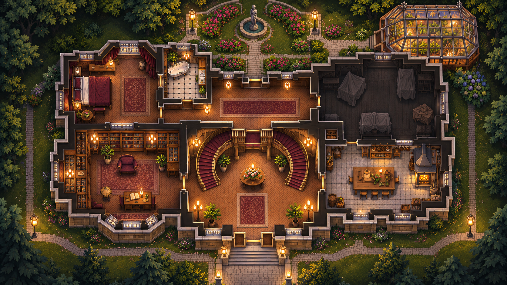

DRAFT_ONLY. Coordinates are approximate image-pixel candidates on the exact approved 1672×941 PNG, not world-plan or canonical graph geometry. The Hall→Corridor marker is a VIRTUAL QA portal, not a discovered physical doorway. The painting must not receive a second 65° projection.

The approved original PNG is read directly from the repository root. The overlay loads assets/raven/map/qa/first_floor_hall_pilot.v1.json and does not write any gameplay/save data. Open using a local HTTP server from the repository root (for example python3 -m http.server 8765 then http://localhost:8765/docs/qa/MAP-QA-01-hall-preview.html).